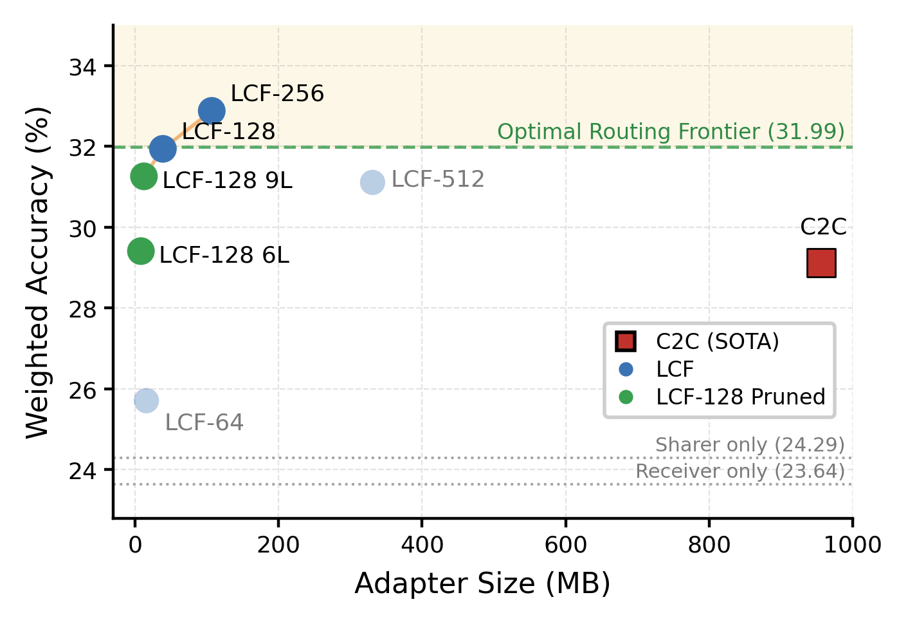

Why it matters왜 중요한가
Multi-agent LLM systems still mostly pass notes in English. Every hop pays twice — the sender decodes to tokens, the receiver re-encodes — and the sender's internal state is squeezed through a ~15-bit-per-token straw.
멀티에이전트 LLM 시스템은 여전히 대부분 영어로 쪽지를 주고받는다. 매 홉마다 비용은 두 번 든다 — 송신 측은 토큰으로 디코딩하고 수신 측은 다시 인코딩한다 — 그리고 송신 측 내부 상태는 토큰당 약 15비트짜리 빨대를 통과해야 한다.
The obvious fix is to skip text and hand over the KV cache itself. Cache-to-Cache (C2C) does exactly this: a learned fuser reads both models' caches and injects a residual update into the receiver's, bypassing decoding entirely. It works — but two costs make it unfit for real agent systems. First, the fuser is enormous: for a ~1B model pair it holds 477.8M parameters (956 MB in bf16), because it runs a full-width pipeline for keys and a second one for values. Second, it is position-wise by design: C2C fuses caches at matching token positions, so the sharer and receiver must process the same prompt — exactly the assumption that breaks when agents take on different roles, tools, or contexts. LCF is a middle ground between free-form text (flexible but slow and lossy) and C2C (fast but rigidly aligned): compressed, cache-level communication that stays cheap and relaxes the shared-context constraint.
당연한 해법은 텍스트를 건너뛰고 KV 캐시 자체를 넘기는 것이다. Cache-to-Cache(C2C)가 바로 이걸 한다: 학습된 융합기(fuser)가 두 모델의 캐시를 읽어 수신 모델 캐시에 잔차(residual) 업데이트를 주입하고, 디코딩을 통째로 건너뛴다. 작동은 한다 — 그러나 두 가지 비용이 실제 에이전트 시스템에는 부적합하게 만든다. 첫째, 융합기가 거대하다: ~1B 모델 쌍에 대해 477.8M 파라미터(bf16로 956 MB)를 갖는데, 키에 대해 전폭 파이프라인을 한 번, 값에 대해 또 한 번 돌리기 때문이다. 둘째, 설계상 위치 정렬이다: C2C는 일치하는 토큰 위치에서 캐시를 융합하므로 송신·수신 모델이 같은 프롬프트를 처리해야 한다 — 에이전트들이 서로 다른 역할·도구·컨텍스트를 맡는 순간 깨지는 바로 그 가정이다. LCF는 자유 텍스트(유연하지만 느리고 손실 큼)와 C2C(빠르지만 경직된 정렬) 사이의 중간 지대다: 저렴함을 유지하면서 동시에 공유 컨텍스트 제약을 완화하는, 압축된 캐시 수준 통신.

By the numbers핵심 숫자
The shared-context frontier, in one table공유 컨텍스트 프론티어, 표 하나로
| Method | Weighted Acc (%) | Adapter Size | Params |
|---|---|---|---|
| Receiver only | 23.64 | 0 | 0 |
| C2C (prior SOTA) | 29.13 | 956 MB | 477.8M |
| LCF-128 | 31.94 | 39 MB | 19.4M |
| LCF-256 (best) | 32.88 | 107 MB | 53.4M |
| LCF-128 pruned (9 layers) | 31.26 | 13 MB | 6.24M |
| ORF (oracle upper bound) | 31.99 | — | — |
Read top to bottom: the bare receiver scores 23.64. C2C lifts it to 29.13 but pays 956 MB. LCF-128 beats C2C by +2.81 points at 4% of the size, and LCF-256 pushes to 32.88 — above the oracle routing frontier that retrospectively picks the better of the two base models. The most striking row is the pruned one: strip LCF-128 down to just 9 of its 28 layer-projectors and it still clears C2C at 13 MB, a 76× parameter reduction. The gains that matter (MMLU-Redux +2.6, MMLU-Pro +3.0) are significant at p<0.001; the smaller benchmarks (ARC-C, OBQA) mostly are not.
위에서 아래로 읽어보라: 맨 수신 모델은 23.64점. C2C가 29.13으로 끌어올리지만 956 MB를 지불한다. LCF-128은 크기의 4%로 C2C를 +2.81점 이긴다, 그리고 LCF-256은 32.88까지 밀어붙인다 — 두 기본 모델 중 나은 쪽을 사후에 고르는 오라클 라우팅 프론티어보다 높다. 가장 인상적인 행은 가지치기한 것이다: LCF-128을 28개 레이어 프로젝터 중 9개만 남겨도 13 MB에서 여전히 C2C를 넘는다 — 76배 파라미터 감소. 중요한 이득(MMLU-Redux +2.6, MMLU-Pro +3.0)은 p<0.001로 유의하지만, 작은 벤치마크(ARC-C, OBQA)는 대체로 그렇지 않다.
In one diagram한 장의 그림
The core idea핵심 아이디어
Compression, not translation
C2C treats cache transfer as token-by-token translation, fusing at full width in the receiver's high-dimensional cache space. LCF reframes it as compressed communication: project the joint key–value representation into a compact latent space, mix it there, and up-project back to receiver-cache residuals. The bottleneck is motivated by two known facts — KV states compress well within a model, and cross-model representations align approximately linearly.
C2C는 캐시 전송을 토큰별 번역으로 보고, 수신 모델의 고차원 캐시 공간에서 전폭으로 융합한다. LCF는 이를 압축된 통신으로 재구성한다: 결합된 키–값 표현을 작은 잠재 공간으로 투영해 거기서 섞고, 다시 수신 캐시 잔차로 펼친다. 이 병목은 두 가지 알려진 사실에 근거한다 — KV 상태는 모델 내부에서 잘 압축되고, 모델 간 표현은 근사적으로 선형 정렬된다.
One shared K+V pipeline
C2C duplicates its entire fuser — one copy for keys, one for values. But keys and values are projections of the same hidden state (newer architectures like Gemma even share a unified KV tensor). LCF fuses them jointly through a single pipeline, then splits late. Combined with the narrow latent (d=128 → 693K params/layer), the adapter drops from 477.8M to 19.4M parameters — a 24.5× cut.
C2C는 융합기 전체를 복제한다 — 키용 하나, 값용 하나. 그러나 키와 값은 같은 은닉 상태의 투영이다(Gemma 같은 최신 구조는 통합 KV 텐서를 공유하기도 한다). LCF는 이를 하나의 파이프라인으로 함께 융합하고 나중에 분리한다. 좁은 잠재(d=128 → 레이어당 693K 파라미터)와 결합해 어댑터는 477.8M에서 19.4M 파라미터로 줄어든다 — 24.5배 감소.
LCF-X drops the shared-context rule
The real barrier for agents is C2C's position-wise requirement. LCF-X removes it with hierarchical attention pooling: split the sharer's context into P spans, pool each into one key–value summary, then pool across spans into a single per-head summary that is broadcast to the receiver. Because the pool has no P-dependent parameters, one trained checkpoint handles paragraphs, sentences, or sliding windows at inference — F1 stays within 0.32 points across a 4.7× range of span counts.
에이전트에게 진짜 장벽은 C2C의 위치 정렬 요구다. LCF-X는 계층적 어텐션 풀링으로 이를 없앤다: 송신 컨텍스트를 P개 스팬으로 나눠 각각을 하나의 키–값 요약으로 풀링하고, 스팬 전체를 다시 헤드별 단일 요약으로 풀링해 수신 모델에 방송한다. 풀에 P-의존 파라미터가 없어, 학습된 체크포인트 하나가 추론 시 문단·문장·슬라이딩 윈도우를 모두 처리한다 — 스팬 수가 4.7배 달라져도 F1은 0.32점 이내로 유지된다.
Communication lives in ~9 layers
Each receiver layer gets its own independent projector, and each carries a Gumbel-sigmoid gate that anneals to a hard on/off at inference. After training, a gate audit shows six layers are already dead and three more are net-harmful by ablation. Keep the top-9 and you lose almost nothing — a purely structural prune, no fine-tuning, that lands the 13 MB / 76×-smaller adapter.
각 수신 레이어는 독립 프로젝터를 갖고, 각각 추론 시 하드 on/off로 수렴하는 Gumbel-sigmoid 게이트를 지닌다. 학습 후 게이트 감사를 해보면 여섯 레이어는 이미 죽어 있고, 세 레이어는 절제(ablation) 기준 순손해다. 상위 9개만 남기면 거의 아무것도 잃지 않는다 — 미세조정 없는 순수 구조적 가지치기로, 13 MB / 76배 작은 어댑터에 도달한다.
How it works어떻게 작동하나
- Prefill both. 양쪽 프리필. The frozen sharer and receiver each read their prompt and emit per-layer, per-head key and value tensors. Both base models stay frozen throughout — only the projector trains.고정된 송신·수신 모델이 각자 프롬프트를 읽고 레이어별·헤드별 키·값 텐서를 내놓는다. 두 기본 모델은 내내 고정이며, 프로젝터만 학습된다.
- Join & compress. 결합·압축. At each receiver layer, concatenate the sharer's and receiver's K and V into one tensor (4HD = 2304 wide), flatten the heads, and down-project to a narrow latent d, followed by a small MLP.수신 레이어마다 송신·수신의 K·V를 하나의 텐서(4HD = 2304 폭)로 이어붙이고, 헤드를 평탄화한 뒤, 좁은 잠재 d로 내려 투영하고 작은 MLP를 통과시킨다.
- Split & up-project. 분리·상향 투영. Split the latent into z_K and z_V and up-project each back to receiver-cache shape, producing residual edits Δ_K and Δ_V.잠재를 z_K와 z_V로 분리하고 각각을 수신 캐시 형태로 다시 상향 투영해 잔차 편집 Δ_K, Δ_V를 만든다.
- Gate & add. 게이트·가산. Scale each residual by a per-head weight α, mask it with a learned Gumbel-sigmoid layer gate g (hard 0/1 at inference), and add it to the receiver's cache: R′ = R + g·(α⊙Δ). Then the receiver decodes as usual.각 잔차를 헤드별 가중치 α로 스케일하고, 학습된 Gumbel-sigmoid 레이어 게이트 g(추론 시 하드 0/1)로 마스킹한 뒤 수신 캐시에 더한다: R′ = R + g·(α⊙Δ). 이후 수신 모델은 평소대로 디코딩한다.
- Pool first, if contexts differ. 컨텍스트가 다르면 먼저 풀링. For LCF-X, insert a front-end before step 2: hierarchically attention-pool the sharer's own context into one fixed-size, position-free K*/V* summary and broadcast it, so the two models never need matching token positions.LCF-X에서는 2단계 앞에 프런트엔드를 끼운다: 송신 측 자기 컨텍스트를 계층적 어텐션으로 하나의 고정 크기·위치-무관 K*/V* 요약으로 풀링해 방송한다. 그러면 두 모델은 토큰 위치를 맞출 필요가 전혀 없다.
What to take away그래서, 가져갈 것
Cache-level communication does not need full-width transfer. A latent channel ~4% the size of C2C matches or beats it — and the fact that d=256 outperforms d=512 says the useful cross-model signal is genuinely low-dimensional, so the bottleneck doubles as a regularizer.
캐시 수준 통신에 전폭 전송은 필요없다. C2C의 ~4% 크기 잠재 채널이 그것을 맞추거나 이긴다 — 그리고 d=256이 d=512를 능가한다는 사실은 유용한 모델 간 신호가 정말로 저차원임을 뜻하므로, 병목은 정규화 역할도 겸한다.
The real unlock is LCF-X dropping the shared-context assumption. Cross-context transfer with a fixed-size summary beats text on both axes at once (+23% EM, 8.5× faster first token) — the first cache-level channel that works when agents genuinely read different things.
진짜 돌파구는 LCF-X가 공유 컨텍스트 가정을 버린 것이다. 고정 크기 요약을 쓰는 서로 다른 컨텍스트 전송이 텍스트를 두 축에서 동시에 이긴다(EM +23%, 첫 토큰 8.5배 빠름) — 에이전트가 진짜 다른 것을 읽을 때 작동하는 최초의 캐시 수준 채널이다.
Inter-model communication is sparse across depth: 9 of 28 receiver layers carry almost all the benefit. A gate-then-ablate prune gives a 13 MB adapter with no retraining — a reminder that where information enters a model matters as much as how much.
모델 간 통신은 깊이 방향으로 희소하다: 28개 수신 레이어 중 9개가 이득의 거의 전부를 나른다. 게이트 후 절제 가지치기로 재학습 없이 13 MB 어댑터가 나온다 — 정보가 모델의 어디로 들어가는지가 얼마나 들어가는지만큼 중요하다는 상기.